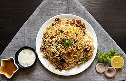

Biryani
Home

Biryani is a mixed rice dish originating in South Asia, traditionally made
with rice, meat (chicken, goat, beef), seafood (prawns or fish), or
vegetables, and spices. It was present in Mughal-era India, though the
precise date and place of origin are debated. It is thought to derive from
a Persian rice dish, either pilau or birinj biryan. The dish makes use of
slow-cooking as in Persian pilau, combined with Persian-style
yoghurt-marinated meat and a spicy Indian style of cooking; it was likely
developed in the Mughal court kitchens. It is also possible that biryani
was brought to South India before the Mughal era, or that pilau was
brought to India and biryani was developed from it before being adopted by
the Mughals.
Ingredients
- Rice
- Beef
- Ghee
- Pepper
- Ginger
- Onions
- Tomatoes
- Green chilies
- Garlic
- Mace
- Nutmeg
Steps
- Marinate the Chicken
Combine chicken with yogurt, ginger-garlic paste, salt, chili powder,
turmeric, biryani masala, and lemon juice. Let it rest for at least 30
minutes, or up to overnight in the fridge
-
Fry Onions & Prepare Masala
-
Heat oil in a heavy-bottomed pot and fry sliced onions until golden
brown; set aside half for garnishing.
-
Add whole spices (cloves, cardamom, cinnamon) to the oil, then add
the marinated chicken.
-
Cook on high heat for 5-6 minutes until the raw smell fades and oil
separates.
-
Add chopped tomatoes, green chilies, and half of the fried onions.
Cook until the tomatoes soften and a thick masala forms.
-
Cook the Rice
- Boil water with whole spices (bay leaf, cloves) and salt.
-
Add the soaked rice and cook until it is about 70-80% cooked
(parboiled). The grain should be firm in the center.
- Drain the rice and set aside.
-
Layer the Biryani ("Dum")
- Lower the heat on the chicken masala.
- Layer the parboiled rice over the chicken.
-
Top with remaining fried onions, chopped fresh mint, coriander, and
a drizzle of ghee or saffron milk.
-
Steam and Serve
-
Cover the pot with a tight-fitting lid (you can use foil to seal it)
to trap the steam.
-
Cook on high heat for 5 minutes, then switch to the lowest heat for
20-30 minutes.
-
Turn off the heat and let it rest for 15 minutes before serving to
let the rice settle